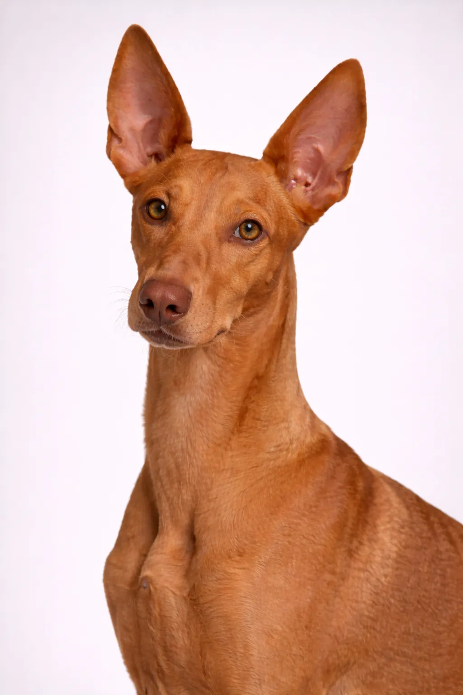

Cirneco dell'Etna
Um dos melhores cães de família — carinhoso, amigável e infinitamente paciente com crianças.
17-20 in
18-26 lbs
Avaliações da Raça
Temperamento
Visão Geral
Um antigo galgo siciliano, o Cirneco é um cão pequeno e elegante com baixa necessidade de cuidados com a pelagem. São companheiros afetuosos e gentis.
Temperamento
O Cirneco dell'Etna é conhecido por ser afetuoso, amigável e independenteee. É excelente com crianças e faz um ótimo animal de estimação familiar. A socialização precoce ajuda-o a se tornar um companheiro equilibrado.
Saúde
Geralmente saudável, com expectativa de vida de 12 a 14 anos. Problemas comuns incluem problemas articulares. Consultas veterinárias regulares e cuidados preventivos são importantes. Manter um peso saudável ajuda a prevenir muitos problemas de saúde.
Exercício
Raça de alta energia que precisa de exercício diário vigoroso — pelo menos uma hora de atividade. Prospera com famílias ativas que gostam de atividades ao ar livre. A estimulação mental por meio de treinamento e brinquedos de raciocínio é igualmente importante. Sem exercício adequado, pode desenvolver problemas comportamentais.
⦿ Esta Raça é Certa para Você?
✓ Ideal Para
- Donos ativos
- Moradores de apartamento
- Climas quentes
✗ Não Ideal Para
- Climas frios
- Áreas soltas com animais pequenos
Nosso Veredicto: Um antigo galgo siciliano, o Cirneco é um cão pequeno e elegante com baixa necessidade de cuidados com a pelagem. São companheiros afetuosos e gentis.